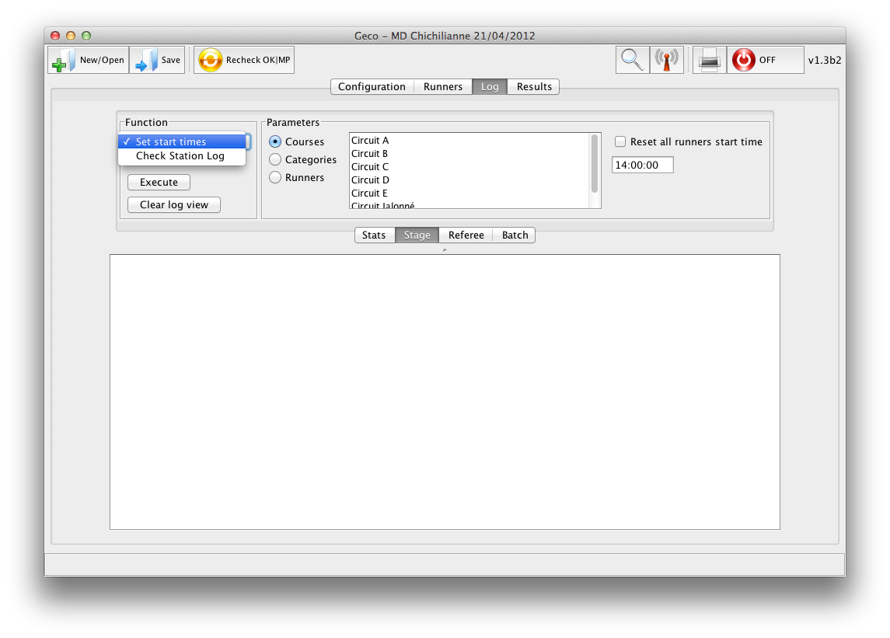

Functions (Log Panel)
Functions are special purpose operations which can be performed on batch of data, usually runners. They allow one to change/check data in registry at once.

There are three groups (tabs) of functions next to Stats in the Log panel. Select a tab and then choose a function in the combobox. Each function displays its set of parameters and actions in the top pane. Pressing Execute performs the default operation of the function.
- Stage functions are commonly performed during stage
- Referee functions serve referee purposes
- Batch functions deal with less common operations
Stage Functions
Set Start Times
- Change registered start times at once for the selected pool of runners (by course, category, or an arbitrary set); can be use to mimic a mass start if necessary
- Only change the start time of runners without race data (i.e. Not Started runners); tick Reset all runners… to change start time for all runners, including those with race data
Check Station Log
- Read ecard logs to automatically set remaining Not Started entries as either Running or DNS
- Ecard logs can be read and exported from stations memory by Si-config
- You can choose to insert unregistered ecards from archive (in case some late runners completely bypassed registration - at least you will know they are in forest)
- Tick Simulate to see what would Geco do with the given data
There are two important gotchas when using this function
- Station memories should be erased before the stage, otherwise logs would give inconsistent data
- Be sure to read all logs (for example all erase stations) before ticking the Mark DNS option, so that you don’t miss some running ecards
Referee Functions
Referee Log
- Display/write a log for the referee with all manual changes having an impact on results, like status change or time change
Batch Functions
Import Ecard Log
- Import an ecard log with punch data to handle a stage “post-mortem”: Geco behaves as if ecards were read live, either in training or racing mode (including course detection, archive lookup)
- Especially useful for light training events, since all operations can be performed after the fact at home, to provide results
- One just needs to read all ecards with Si-config during the event in order to export the log
Recheck Runners
Recheck all runners in the selected pool (by course, category, or an arbitrary set); a more fine-grained version of Recheck OK|MP in the toolbar
Delete Data
- Reset some/all stage data to start afresh
- Geco performs a save/backup before the operation
- Can also perform some cleanup with old backups
Random Generator
- Generate random entries (complete with ecard data) to test Geco behavior
- Additional action to generate an unknown entry (test manual vs auto mode)
- Additional action to generate ecard data for an existing entry (to test duplicate entries)
{kind=link}